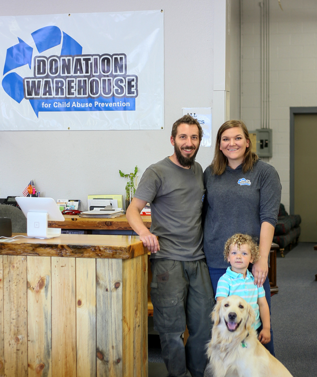

Donation Warehouse is committed to raising money to fund child abuse
prevention in our community. We achieve this by collecting, repairing,
cleaning and selling donated items.

We pickup and sell used furniture, used appliances and more at our store to raise money to help fund the prevention of child abuse in Western Montana.
Funds raised go to support the Child and Family Resource Council, dba The Parenting Place, our local Exchange Club Child Abuse Prevention Center. To find out more about The Parenting Place, please visit their website at www.parentingplace.net.
We receive and have for sale donations of used furniture, appliances, junk vehicles, exercise equipment, yard equipment and more from individuals and supporting businesses. We collect, repair, refurbish and sell these items at a fraction of the “new” price.
What started as a garage sale fundraiser for the Exchange Club, has become a premier source of funding for The Parenting Place. After working hard at the garage sale, a member of the Exchange Club, suggested selling some of the larger items on craigslist. For two years, Lee accepted donations of furniture, appliances and exercise equipment. Lee then cleaned, repaired and sold the items giving the proceeds to the Exchange Club. This provided funding year round for the projects of the Exchange Club. In December 2010, Lee’s son in law, Mark, lost his job and was looking for a new career. Mark began helping Lee and quickly developed this from a small fundraiser out of a garage, into a significant resource for the community. By January, Mark was doing so well at this, that at Lee’s suggestion, Mark starting doing it full time and signed a contract with the Exchange Club to provide his services under his business, Seven Acre Sales. All of the money raised was then committed to be used for child abuse prevention. He rented a warehouse and collected items, charging for his time to collect, repair and sell. In April 2011, Mark was so busy that he asked his wife Laci to join him in his business. In June they changed the name to Donation Warehouse. In August they moved next door, doubling the size of the store. In October 2012, the Exchange Club “gifted” this fundraiser directly to their child abuse prevention center, The Parenting Place. Donation Warehouse raises, on average, over $100,000 each year! All of this money goes to The Parenting Place and accounts for about 50% of their annual budget.